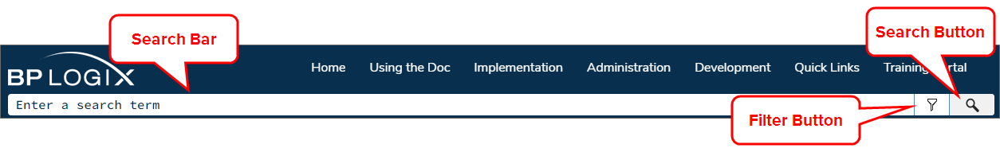
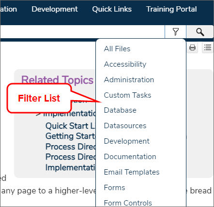

) in the search bar to filter the results to a specific category of topic.
) in the search bar to filter the results to a specific category of topic.At the top of every page, a search bar is displayed.

You can enter a term in the search bar and then click the Search button to return the results of your search term. To return more specific search results, you can apply a filter to the search results, or you can use search operators to change how topics are evaluated for return.
You can use the Filter button to select a specific topic area in which to perform the search, and return results only from that topic area when you click the Search button. The Filter button presents a dropdown list of filters, each of which represents a specific topic type.

You can click on any filter to select it. You can select a filter from the list before or after entering and retrieving search results. Similarly, you can remove the filter by selecting All Files at any time. In all cases, you'll only be shown search results that match the topic filter you've chosen. The filter you select will remain active until you change or disable it. If you change the filter by selecting a different option from the dropdown menu, the search results will automatically switch to show you the results that match the new filter. Similarly, you can disable the filter and see all search results by selecting All Files from the filter dropdown.
Some search filters will show only results for specific process director objects, others will return results from an entire Guidebook, such as the Implementer's or System Administrator's Guide, While others may show results from more than one guidebook. The filters and the type information they return are displayed in the table below.
| Filter | Documentation Returned |
|---|---|
| Accessibility | Topics specifically related to Web Accessibility guidelines. |
| Administration | All topics in the System Administrator's Guide, plus specific admin-related topics from elsewhere. |
| Custom Tasks | All topics in the Custom Tasks Guide. |
| Database | Any topic in the Database Guide, plus specific data-related topics from elsewhere. |
| Datasources | Topics specifically relating to creating and configuring Datasource objects. |
| Development | All topics from the Developer's or Database Guides. |
| Documentation | All topics from the Documentation Guide. |
| Email Templates | Topics specifically relating to creating and configuring Email Templates. |
| Forms | Topics specifically relating to creating and configuring Form objects. |
| Form Controls | Topics specifically related to the use of Form Controls in the Online Form Designer. |
| Implementation | All topics in the Implementer's Guide. |
| Installation | All topics in the Installation Guide. |
| Knowledge Views | Topics specifically relating to creating and configuring Knowledge View objects. |
| Online Form Designer | Topics specifically relating to using the Online Form Designer. |
| Process Timelines | Topics specifically relating to creating and configuring Process Timeline objects. |
| System Variables | All topics in the System Variables Guide. |
| User Interface | Topics specifically relating to the Process Director User Interface. |
| Web Services | All topics related to using Web Services, Including the WSDL, REST Services, Business Values, and Web Service Custom Tasks. |
Unlike a Google search, where contextual relationships and verbiage may affect the search results you see, the documentation search engine will return every topic that contains text that matches your search term. You have several options for altering the results the search engine retrieves.
Use the Filter button () in the search bar to filter the results to a specific category of topic.
When using more than one word to search for a specific phrase, try enclosing the search term in Quotation Marks, e.g., "sequence number". Enclosing the term in quotes will search for the exact phrase you enter. Otherwise, the search engine will return all topics that match all of the search terms you use, e.g., a search for sequence number will return all topics that contain the words sequence and number.
You can also use search operators to change the parameters of your search, and override the default behavior of the search feature. None of the search operators are case-sensitive. The following search operators are available to you.
AND, the plus sign ( + ), or the ampersand ( & ) between search words.OR or the pipe symbol (|) and the search will expand to return all topics that contain any of the words in your search term.NOT, the carat symbol ( ^ ), or the exclamation point ( ! ) as an operator at the end of your search terms to search only for matching topics that don't contain the term following the operator. E.g. form controls ^ variables will return all topics that contain the words 'form' or 'controls' but don't contain the word 'variables'.(form | controls) (timeline ^ variables). This combination will return all topics that contain either the word "form" or the word "controls, as well as the word "timeline" but not the word "variables".OpenAI, an AI research company, has a conversational AI model known as ChatGPT. This AI model can provide answer to conversational queries when properly trained. An additional service, CustomGPT, enables you to train ChatGPT on a specific set of documents, web pages, or other information, and uses ChatGPT to provide responses based on this custom set of documents.
AT BP Logix, we've added the CustomGPT service to the Documentation web site. CustomGPT is accessed via a small icon that appears at the bottom right corner of every page.

Clicking this icon opens a chatbot where you can enter your queries and receive a response, such as the one shown in the example below.

The CustomGPT service has trained ChatGPT on all of the documentation topics that exist everywhere in the Process Director documentation. You can ask a question about any topic that exists in the documentation and, hopefully, receive a relevant and helpful response.
CustomGPT has been trained only on the Process Director documentation, so questions that fall outside the scope of the documentation can't be correctly answered. If you ask a question that's not covered in the documentation, CustomGPT will respond with a message that tells you it cannot provide an answer in the given context--the "context" being the information on the Documentation web site.
We hope this new service makes it easier to find answers to Process Director questions without having to perform a document search that might return many unwanted results, because traditional word searches can't understand the context of the term you're using to search.
For CustomGPT to work best, however, your query should be as specific as possible. For example: How do I configure a report Datasource? doesn't provide quite enough detail for CustomGPT to know whether you want to know about the Data Sources tab of a Report definition, or about the Datasource object in general, and may return a different answer than you want. Comparatively, How do I configure the Data Sources tab of a report? provides better detail about the specifics you're looking for in the answer, and thus a more detailed and relevant response.
On the other hand, a query like, What custom variable sets the default database timeout? or Can you give me a code sample for nDBCommandTimeout? will generally return the correct answer, or in the case of the latter query, the code sample in the documentation.
Because the documentation is routinely updated, and because many of the search files are cached on your local browser, you may notice that the search function returns no results. This is usually because your web browser (Chrome, Edge, Safari, etc.) is caching old, invalid versions of the search database files in your browser cache. You can usually resolve this issue by clearing your browser cache's stored files. Your browser will then retrieve the updated files to perform the search function correctly.